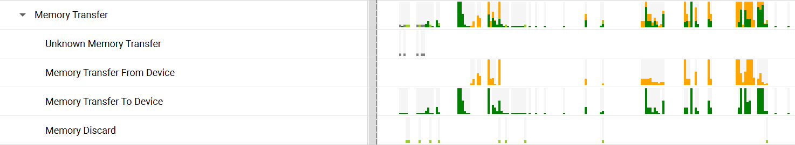
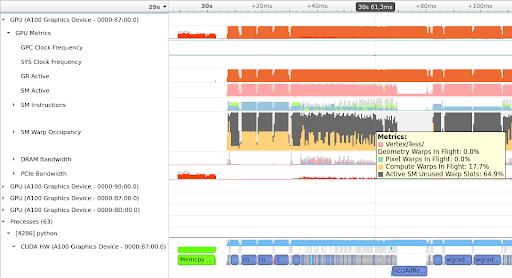
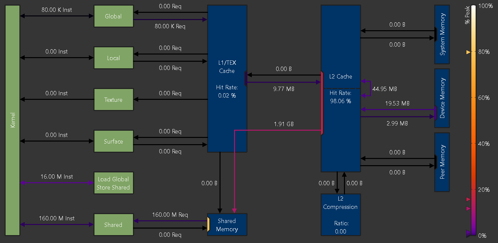
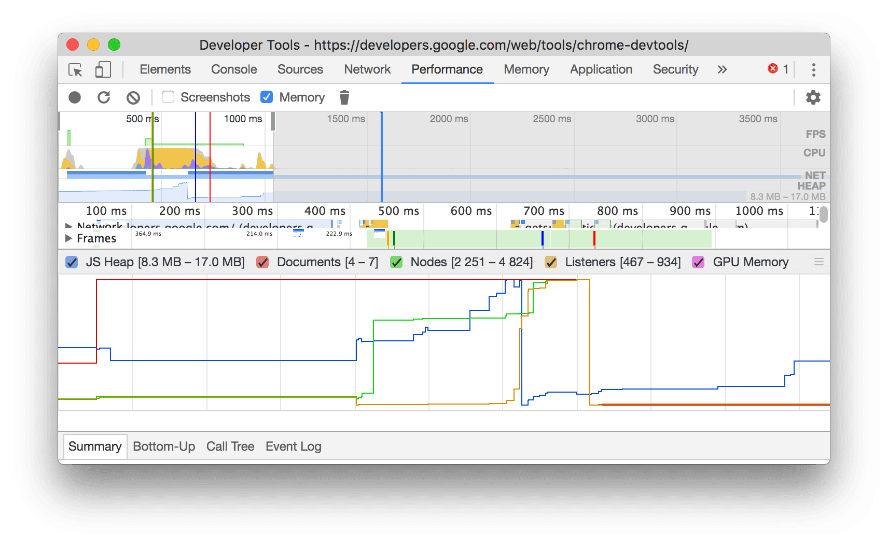
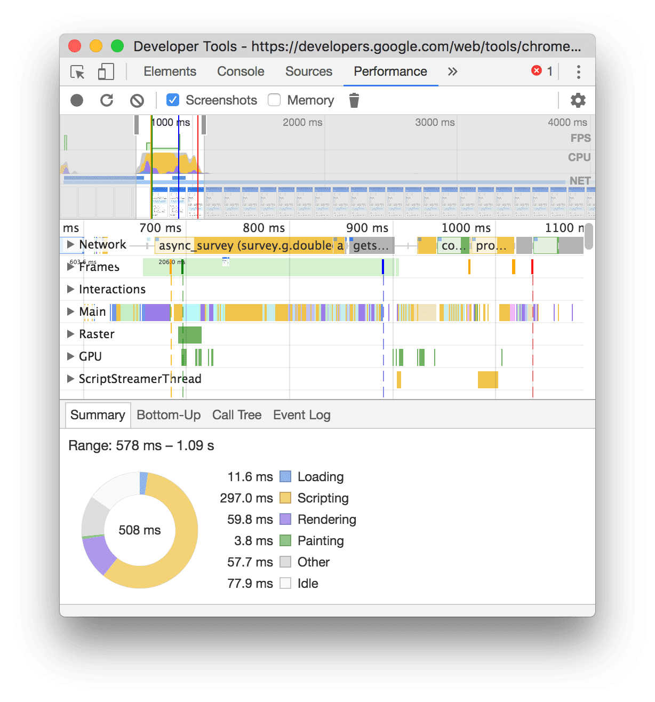

PyPTO Toolkit / Fusion Performance Diagnosis / Competitive Analysis
从“慢 task”到“可行动根因”：额外搬运、等待与流水利用率的观测体验设计
本报告从资深 PTO 算子开发专家和 PyPTO 产品经理两个视角出发，以 issue #2141 暴露的慢 task 归因诉求为入口，拆解业内性能工具如何表达 memory movement、wait / stall、pipeline utilization，并转译为 PyPTO Toolkit 可落地的融合算子性能诊断体验方案。
1. Issue #2141 的业务本质
本次竞品研究要回答的关键问题
- 成熟性能工具如何把“时间线上的慢”拆成 memory movement、wait / stall、pipeline utilization，而不是只展示单一耗时条？
- 当用户选择一个异常时间区间或慢 task 时，哪些全局概览、局部截图、资源曲线和事件详情应该同步过滤？
- Chrome DevTools Performance 的 overview + screenshots + tracks + summary 模式，迁移到 PyPTO 后应对应 host CPU、device CPU、AICPU、AICore、memory、计算图状态中的哪些对象？
- PyPTO Toolkit 当前泳道图、PMU CSV、memory schema 已经具备哪些基础能力，哪些缺口导致用户仍要靠经验猜？
- 如果把 AICPU 视图、AICore 视图和 Memory 视图融合到同一泳道区，如何既保持全局性能感知，又避免图层过载？
算子专家眼里的问题
专家已经能看懂泳道图和计算图，也知道可以调 tile、改中间结果、调整 vec_nbuffer_setting 或融合边界。真正卡住的是“证据不足”：他看见慢，却不能快速证明慢来自内存、等待还是流水。
产品经理眼里的机会
这不是增加一张图，而是把 PyPTO Toolkit 从“执行可视化工具”推进到“融合算子性能诊断入口”。产品价值在于把观察、归因、下钻、源码回跳、复跑验证串成闭环。
证据边界：GitCode issue 页面为 SPA，未登录/无前端上下文时只能读到页面壳；本报告对 #2141 的诉求使用 PyPTOUX 已沉淀的 issue 摘要作为输入：UB 压力、spill-like 行为、额外 GM/UB 搬运、等待和流水利用率观测。
2. 竞品不是“谁图多”，而是谁能闭环
| 产品 / 工具 | 它擅长回答什么 | 对 #2141 的启发 | PyPTO 不能照搬的地方 |
|---|---|---|---|
| NVIDIA Nsight Systems | 某段时间内 GPU/CPU/IO/Memory 活动如何展开，资源是否空闲或被 IO 卡住。 | 把 memory transfer、GPU metrics、timeline 放在同一时间坐标下，让“什么时候搬、搬多久、与 kernel 是否重叠”可见。 | 它偏系统时间线，不能直接回答 PyPTO 的 tensor、leaf task、fusion fragment、tile 参数该改哪里。 |
| NVIDIA Nsight Compute | 单 kernel 的 memory chart、roofline、Speed of Light、stall / issue / throughput 归因。 | 用少量高层指标先定性瓶颈，再下钻 memory unit、link、pipe、counter。 | PyPTO 是多 task、多 core、wrap / 1C2V 协作和编译产物联动，不能只做单 kernel 报告。 |
| Chrome DevTools Performance | 时间线局部选择、Memory chart、initiator 跳转、Summary / Bottom-up / Event Log 解释。 | 选中一个区间或事件后，所有详情都跟着过滤；用户不需要在全局数据里迷路。 | Web 性能事件粒度与 PyPTO 硬件 counter 粒度不同，但交互范式很适合迁移。 |
| PyTorch Profiler | 通过 memory timeline 和 raw memory event 解释内存创建、增长、销毁与类别。 | “曲线 + 原始事件 + category”的组合适合 PyPTO 表达 live memory、peak contributor、copy 事件。 | PyPTO 需要把事件继续映射到 rootHash、callOpMagic、leafHash、源码和 tile 表达。 |
| Perfetto / trace viewer 类工具 | 超大 trace 的 track、slice、counter、selection、SQL/查询式分析。 | 大规模 trace 要靠分层、过滤、选择和聚合，不应默认全量画所有同步线和 copy edge。 | PyPTO 用户不是 trace 工具专家，默认视图必须更强归因、更少自由探索负担。 |
3. 真实产品图与可借鉴模式





Chrome 时间轴迁移到 PyPTO 的核心判断
它是用户选择分析窗口的入口。PyPTO 应把 host CPU、device CPU、AICore busy、memory bandwidth、wait density 放到顶层概览。
Web 页面截图可迁移为计算图 / fusion graph / live memory 热点 / wrap topology 的时间片状态缩略图。
Chrome 的 Main / GPU / Network 对应 PyPTO 的 AICPU / AICore / Memory / Sync / Host runtime 多轨联动。
选中 578ms-1.09s 后，summary 只解释该窗口。PyPTO 也应只解释当前 wrap、task group 或选中时间片。
待和你讨论的产品判断
- 时间片缩略图放什么：我倾向于默认放“计算图状态缩略图 + memory pressure heat overlay”，而不是源码截图。原因是 #2141 的问题发生在融合片段运行时，用户更需要知道当前时间片哪个 subgraph / tensor live set / copy edge 在主导。
- 顶层概览放几条曲线：建议首期限制在 5 条以内：Host CPU、Device CPU/AICPU、AICore active、UB headroom 或 live UB、Memory bandwidth / MTE busy。过多 counter 会把 overview 变成小型 PMU 表。
- Memory 是否成为独立 process：建议在泳道区作为一组 process-like tracks 出现：Memory Overview、GM↔UB movement、UB live set、L2 / main access。这样它既能和 AICore 同步对齐，又不被埋进单个 task tooltip。
- 计算图状态图是否真的可生成：如果当前运行产物能稳定绑定
program.json、rootHash、callOpMagic、leafHash，可以先做静态图状态序列；若缺少时间片映射，先用 task / wrap 热点缩略图替代。
4. #2141 的目标体验不是图，而是诊断路径
先用异常列表建立方向感
打开本轮运行产物后，先展示 Top abnormal tasks：慢在哪里、主导瓶颈是什么、证据强度如何、下一步该看哪个视图。用户不应从空白泳道图开始猜。
再在泳道图上内联解释时间
task bar 不再是单一耗时块，而是分为 compute、memory move、wait、unaccounted 四段。这样用户能立即区分“真干活”与“等/搬/解释不了”。
内存下钻绑定 tensor / op / source
Memory pressure 面板必须展示 peak live memory、UB headroom、Top contributors、copy edge，并能跳回 program.json、计算图节点和源码。
等待下钻回答“谁让谁等”
等待不是一个总数。需要区分 predecessor wait、schedule wait、sync wait、resource / uncovered gap，并能高亮信号方、等待方、wrap 和 peer task。
流水下钻回答“谁没有跑满”
Pipeline view 应按 AIC / AIV / MTE / FixPipe / Scalar 等维度解释 utilization、dominant counter 和 critical lane，而不是把 PMU CSV 直接丢给用户。
最后用复跑对比证明动作有效
每条建议都应能被下一轮运行验证：task time 是否下降、extra movement 是否减少、UB headroom 是否增加、wait ratio 是否下降、pipeline balance 是否改善。
5. PTO 风格代码生成示意图：PyPTO 目标态
先拆真实 PyPTO Toolkit 当前效果
当前链路的强项是已经有运行产物和局部证据：runtime_debug_mode 可产出泳道相关数据，draw_swim_lane.py 里的 task 已包含 exec_start、exec_end、wrapId、operand hint、syncEvents 等字段；PMU parser 可按 group 输出 pipeline、memory、conflict、L2 等 counter；memory schema 已能表达 copy in/out 与 memory range。
问题是这些证据还没有形成一个像 Chrome Performance 那样的“选择窗口 -> 总览 -> tracks -> 详情”交互闭环。用户打开泳道图后，仍要靠经验把慢 task、PMU CSV、copy schema、program/source 之间的因果关系拼起来。
ide-frame / workbench-shell 的三栏工作台思想和 swimlane-task-bar 的分段 task bar 语义；未调用共享 JS，因报告是静态阅读产物。示例数据为按 PyPTO 产物字段编造的 L2 产品示意，不代表真实运行结果。
融合 AICPU / AICore / Memory 的泳道图设计原则
| 设计对象 | Chrome 类比 | PyPTO 对应 | 交互规则 |
|---|---|---|---|
| 顶部 overview | FPS / CPU / NET 汇总 | Host CPU、Device CPU / AICPU、AICore active、UB live、MTE / memory bandwidth | 拖拽选择时间窗口后，所有 tracks 和右侧诊断只解释当前窗口。 |
| 状态缩略图序列 | 页面 screenshots | 计算图状态、wrap topology、memory pressure heat overlay、critical subgraph snapshot | 默认显示计算图状态；当 memory 瓶颈为主时切换为 memory heat 缩略图。 |
| AICPU tracks | Network / Main 中的调度与发起事件 | host launch、runtime prepare、AICPU control task、copy orchestration | 用来解释 AICore 空窗是否来自 host/device 调度侧，而不是误判为算子内部慢。 |
| AICore tracks | Main / GPU 执行 tracks | AIC、AIV0、AIV1、wrap group、compute / memory move / wait 分段 task | 按 wrap 聚合，可展开 1C2V；选中 wait 段时高亮 peer SyncSet。 |
| Memory tracks | Memory chart + NET transfer | GM↔UB movement、UB live set、L2 / main access、copy edge | 作为独立 process-like 区块与 AICore 对齐，而不是藏在 tooltip 里。 |
6. PyPTO 应采用的观测信息架构
| 层级 | 用户问题 | 主视图 | 关键指标 | 行动出口 |
|---|---|---|---|---|
| Diagnosis Overview | 我先看哪里？ | Top abnormal tasks / wraps | duration、severity、bottleneck type、evidence level | 进入 memory / wait / pipeline 下钻 |
| Segmented Swimlane | 这个 task 的时间花在哪里？ | compute / memory move / wait / unaccounted 分段条 | ratio、absolute time、dominant segment、peer relation | 点击分段，右侧详情跟随 |
| Memory Pressure | 是不是 UB 压力或额外搬运？ | live memory 曲线 + Top contributors + movement graph | peak live bytes、UB headroom、GM/UB bytes、copy avoidability | 定位 tensor/op，建议 tile / nbuffer / fusion 调整 |
| Wait Chain | 我在等谁？为什么等？ | 等待段 + SyncSet/SyncWait 连线 + predecessor chain | sync wait、schedule wait、predecessor wait、critical peer | 跳到 peer task / wrap，优化拖尾来源 |
| Pipeline Balance | AIC/AIV/MTE 谁没跑满？ | 1C2V grouped lanes + PMU group lens | busy cycles、memory access counters、stall/conflict、gap ratio | 判断 compute-heavy、MTE-heavy、UB-conflict、L2 reuse failure |
| Before / After | 我这次改动真的有效吗？ | 两轮运行对比 | task time delta、extra movement delta、wait ratio delta、headroom delta | 沉淀为团队调优规则或继续下一轮采集 |
7. 对产品策略的判断
不要先做大而全 Trace Viewer
Perfetto/Nsight 适合专家自由探索，但 PyPTO 当前最需要的是“先归因”的产品入口。默认视图要少而强，能把用户带到正确问题。
不要把 PMU CSV 当产品能力
PMU group 是诊断镜头，不是表格字段。用户要的是“为什么 MTE 高、AIV 空、UB 冲突多”，不是几十列 counter。
不要让内存图脱离源码动作
memory movement 只有绑定 tensor、op、fusion fragment 和源码位置，才会变成 PyPTO 用户能执行的改动。
8. 分期路线
| 优先级 | 能力 | 为什么先做 | 最小数据需求 |
|---|---|---|---|
| P0 | 慢 task 自动归因 + 分段泳道 | 直接解决“看见慢但不知道为什么”的核心痛点。 | exec_start/end、PMU accounted cycles、wait / sync events、memory movement summary |
| P0 | Memory Pressure 面板 | #2141 明确指向 UB pressure、spill-like 与额外搬运。 | live memory、copy in/out、raw tensor memory range、top contributors |
| P1 | Wait Chain 面板 | 等待和搬运经常互相伪装；必须能区分“搬得慢”和“等别人”。 | syncEvents、predecessor ready time、schedule wait、peer task mapping |
| P1 | Pipeline Balance by PMU group | 把 PMU group 转译为 C/V/MTE/FixPipe 的诊断镜头。 | PMU group 2/4/6/7/8 counters、wrap / core mapping、total cycle |
| P2 | 源码 / 计算图 / program 联动 | 诊断必须落到可修改对象。 | rootHash、callOpMagic、leafHash、operand hints、source map |
| P2 | Before / After 自动对比 | 把试错变成验证，沉淀团队可复用经验。 | run id、task identity matching、metric delta、diagnosis delta |
9. 结论
面向 #2141，PyPTO Toolkit 最有价值的竞品学习对象不是某一个单点图表，而是三类成熟范式的组合：Nsight Systems 的时间线资源观测、Nsight Compute 的瓶颈归因图、Chrome / Perfetto 的选择驱动分析。PyPTO 的差异化在于把这些能力进一步绑定到 tensor、op、leaf task、wrap、源码和调参动作。
因此建议把“额外搬运 / 等待 / 流水利用率观测”定义为 Fusion Performance Diagnosis 的第一期，而不是 Memory Viewer。Memory Viewer 只回答“发生了什么”，Diagnosis 才回答“为什么慢、证据多强、下一步改哪里、改完是否有效”。
Sources
- PyPTO GitCode issue #2141：用户指定 issue；页面为 SPA，本轮未直接抓到正文 API 内容。
- NVIDIA Nsight Systems User Guide：timeline、memory transfer、GPU metrics、memory utilization 产品图与概念。
- NVIDIA Nsight Compute Profiling Guide：Memory Chart、Roofline、Speed of Light、PM sampling、stall / issue 概念。
- Chrome DevTools Performance reference：Memory metrics、timeline selection、Summary / Bottom-up / Event Log、initiator 跳转。
- 用户上传截图：
chrome-performance-page-load-user-upload.png，用于分析 Chrome Performance overview、screenshots、tracks、Summary 组合模式。 - PyTorch Profiler documentation：
export_memory_timeline、memory timeline plot、raw memory event 格式。 - Perfetto UI documentation：track、slice selection、timeline navigation、current selection 分析范式。
- PyPTO local mirror:
/Users/wny/Documents/2 领域 Area/工作/EASY CANN/样例工程&文件/pypto，用于确认泳道图、PMU parser 和 memory schema 的当前本地结构。 - PTO design system local skill:
.agents/skills/pto-design-system/，第 5 节示意图参考其 dark-first workstation、workbench shell、IDE frame 和 swimlane task bar 语义。
本报告中的产品截图保存在同目录 assets/，文件名与来源工具对应。所有“代码生成示意图”均为本报告内联 SVG，不代表真实产品截图。